Making the Most of Your Day: Insights into Disney World Attraction Lines
HNRS 3900: Honors Seminar: Creating the Magic
Author
Liam Jennings
Published
May 8, 2025
1 Introduction
The Walt Disney World® Resort offers a variety of entertainment options for all ages, including shows, attractions, character meet-and-greets, and much more. As a result, the theme parks attract large crowds, leading to extended wait times. Given Disney’s commitment to innovation, it is likely that these wait times will continue to rise. Since visiting the Disney theme parks can be expensive, particularly for families and groups, visitors need to optimize their time spent at the resort.
The objective of this project is to analyze factors that may influence average wait times for attractions and which attractions are the most popular. I collected wait time data from TouringPlans.com for 14 rides: Alien Swirling Sauces, Avatar Flight of Passage, DINOSAUR, Expedition Everest - Legend of the Forbidden Mountain, Kilimanjaro Safaris, Na’vi River Journey, Pirates of the Caribbean, Rock ‘n’ Roller Coaster Starring Aerosmith, Seven Dwarfs Mine Train, Slinky Dog Dash, Soarin’ Around the World, Spaceship Earth, Splash Mountain, and Toy Story Mania!. The project utilizes exploratory data analysis to compare mean wait times among the attractions from 2015 to 2021.
2 Background
The data is from TouringPlans.com, which is a website hosted by a group of researchers studying the ins and outs of Disney Parks. Their mission: “To help you have a better vacation by saving you time and money on your trip.” Also, they are the home of The Unofficial Guide to Walt Disney World and The Unofficial Guide to Disneyland. Len Testa, the president of the research team, is responsible for the mathematically generated “Touring Plans,” a result of his graduate thesis. Fred Hazelton, “Master Statistician,” is behind TouringPlans.com’s Crowd Calendar and theme park wait time models. The Crowd Calendar reflects wait time forecasts for each date and park and is based on 58 million wait times collected in the past 15 years. They account for special events, holidays, and other factors that bring people to the parks. Hazelton created the models used in the TouringPlans.com mobile wait times app, Lines. The initial models came from Operations Research (OR) and queuing theory (Brown, 2012). OR is a collection of techniques for making the most efficient decisions. Typically, there are constraints and a goal that needs to be met. For example, a farmer may need to know how many plots of carrots and corn to plant to generate the most profit. However, he only has so many seeds to grow the plants. Queuing theory is the study of lines. The main objective is to use models to estimate things like waiting times, queue lengths (how many people are going to be waiting), and probabilities related to how many people will be in the queue. Queueing theory is used at banks and fast food restaurants, where the establishment has a certain number of tellers or cashiers working so that some number of customers get served within a certain amount of time on average; that’s important because the longer a customer waits in line, the less happy they’ll be. Chick-fil-A and Disney are two of the best companies in queue satisfaction, and their research shows that. Len Testa updated the model with concepts from his graduate thesis. The model incorporates the time-dependent travelling salesman problem, which optimizes the schedule of getting from place to place (Brown, 2012). An example is an Amazon delivery driver dropping off packages in different locations and finding the optimal route in terms of time and fuel.
3 Literature Review
Destiny Ferman (2024) investigated the wait times of six Disney attractions and what factors are important to drawing crowds at Disney. In An Exploratory Analysis of Walt Disney World Ride Wait Times, Ferman collected wait times from TouringPlans.com to compare and contrast mean wait times amongst the six attractions from 2015 to 2019. Also, she compared the results to 2020 and 2021 to observe any difference in wait times during and after the COVID-19 pandemic. She discovered that the season (Summer, Spring Break, Christmas, etc.) is the most influential factor on wait times. Also, weather, including rain, did not have much of an effect on average wait times. The findings of the 2020 model predictions indicate that, on average, wait times for the specified rides were expected to be higher than in the previous years. Compared to the observed wait times, these findings are a direct representation of the impact of the COVID-19 pandemic.
4 Data
I collected wait time data from TouringPlans.com for 14 rides: Alien Swirling Sauces, Avatar Flight of Passage, DINOSAUR, Expedition Everest - Legend of the Forbidden Mountain, Kilimanjaro Safaris, Na’vi River Journey, Pirates of the Caribbean, Rock ‘n’ Roller Coaster Starring Aerosmith, Seven Dwarfs Mine Train, Slinky Dog Dash, Soarin’ Around the World, Spaceship Earth, Splash Mountain, and Toy Story Mania!. In addition to the wait times, there was general ride information (e.g., ride duration) and schedule information (e.g., season).
Code
## set seedset.seed(6)## tablewait_times_full |># select columnsselect( ride_name, datetime, posted_wait, actual_wait, ride_duration, weekday, SEASON, WDWMEANTEMP, inSession ) |># 10 random observationsslice_sample(n =10 ) |># gt tablegt() |># align columnscols_align(align ="center" ) |># label columnscols_label(ride_name ="Ride Name",datetime ="Date",posted_wait ="Posted Wait",actual_wait ="Actual Wait",ride_duration ="Ride Duration",weekday ="Day of Week",SEASON ="Season",WDWMEANTEMP ="Mean Temperature",inSession ="% of Schools in Session" ) |># format numerical columnsfmt_number(columns =c( WDWMEANTEMP ),decimals =1 ) |># title and subtitletab_header(title =md("**Walt Disney World Wait Times Data**"),subtitle =md("*Data: TouringPlans.com*") ) |># footnotetab_footnote(footnote =md("*From 2015-2019*") ) |># theme gtExtras::gt_theme_nytimes()
Walt Disney World Wait Times Data
Data: TouringPlans.com
Ride Name
Date
Posted Wait
Actual Wait
Ride Duration
Day of Week
Season
Mean Temperature
% of Schools in Session
Seven Dwarfs Mine Train
2018-01-19 14:42:07
120
NA
3.0
Saturday
MARTIN LUTHER KING JUNIOR DAY
50.1
94%
Toy Story Mania!
2017-09-07 10:16:07
10
NA
6.5
Friday
SEPTEMBER LOW
83.0
96%
Spaceship Earth
2015-08-24 15:22:12
5
NA
16.0
Tuesday
SUMMER BREAK
82.2
74%
Rock 'n' Roller Coaster Starring Aerosmith
2018-03-07 16:02:07
95
NA
1.5
Thursday
SPRING
64.8
94%
Expedition Everest - Legend of the Forbidden Mountain
2019-04-24 21:10:10
5
NA
4.0
Thursday
EASTER
72.9
92%
Seven Dwarfs Mine Train
2017-02-06 10:32:07
90
NA
3.0
Tuesday
WINTER
65.1
94%
Pirates of the Caribbean
2019-01-01 21:35:08
15
NA
7.5
Wednesday
CHRISTMAS PEAK
72.7
0%
Expedition Everest - Legend of the Forbidden Mountain
2015-01-22 10:25:05
15
NA
4.0
Friday
MARTIN LUTHER KING JUNIOR DAY
66.1
95%
Kilimanjaro Safaris
2016-03-10 09:23:18
NA
18
20.0
Friday
SPRING
73.3
89%
Spaceship Earth
2018-08-17 18:22:07
10
NA
16.0
Saturday
SUMMER BREAK
83.9
54%
From 2015-2019
The table above shows the variables used in the analysis. The date column has the date and time stamp in hours, minutes, and seconds. The posted wait time is the time listed at the ride entrance or app. The actual wait time is the observed wait time from TouringPlans. 47687 (about 2%) of the observations have actual wait times. All wait times are listed in minutes. The visualizations and models will use actual wait time because Disney can manipulate the posted wait times. Season is the seasonal category based on the time of year (e.g., fall, winter, Thanksgiving, etc.). I used season instead of month because season explains the trends not captured by months. The mean temperature is the average temperature (in Fahrenheit) at Walt Disney World that day. The percentage of schools in session is the percentage of schools across the country that are in session that day. I filtered the data to only include wait times between 8 am and 9 pm from 2015 to 2019 to avoid outliers that may impact general trends.
5 Methodology
I will use tables, visualizations, and clustering to compare wait times and attractions. The first thing I explored was the average actual wait times throughout the day.
Code
## general wait timeswait_times_full |># group bygroup_by( hour_of_day, YEAR ) |># average wait timesummarize(# average posted waitmean_actual_wait =mean(actual_wait, na.rm =TRUE),# ungroup.groups ="drop" ) |>ggplot(aes(# x axis hour_of_day,# y axis mean_actual_wait,# colorcolor = YEAR ) ) +# geom linegeom_line() +# pointsgeom_point(alpha =0.6,size =2 ) +# average posted wait timegeom_hline(# average actual wait timeyintercept =27.22,# dashed linelinetype ="dashed",# colorcolor ="black",# line widthlinewidth =1.5 ) +# scale x axisscale_x_continuous(breaks =seq(8, 21, 1),labels =c(8:12,1:9 ) ) +# scale colorsscale_color_manual(values =c("#3136c6", "#ad41df", "#F3CC64", "#1a9bcb", "#B12228") ) +# labelslabs(x ="Hour of the Day",y ="Average Actual Wait (min)",color ="Year",title ="Disney Wait Times by Hour of Day" ) +# custom themedisney_theme()
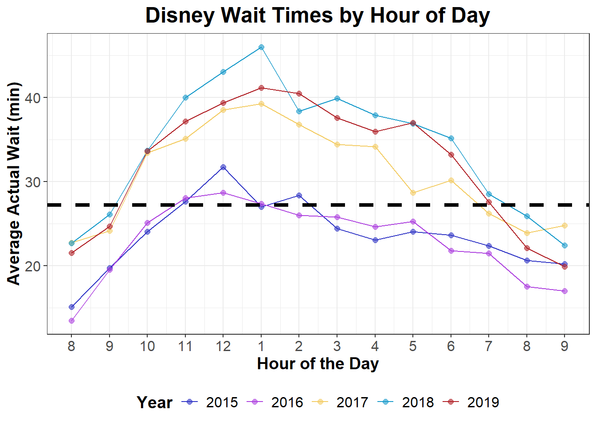
The plot shows the average actual wait times for each hour of the day. Each line represents the year. The black dashed line is the average actual wait time. The first takeaway from the plot is the increase in average wait time for nearly all hours as the years go on. As time progresses, more travelers are venturing to Walt Disney World, which is causing longer lines. In 2015 and 2016, there was a peak at noon, and wait times decreased slowly. In the years following, the peak has moved to 1 pm and appears to last longer until steep dropoffs at 7 pm. This is likely due to early park closures and guests doing other things, such as dinner, fireworks, parades, etc.
The next thing I looked at was the average wait times for each attraction.
Code
## mean wait times of each ridewait_times_full |># group by ridegroup_by(ride_name) |>summarize(# mean posted wait timemean_posted_wait =mean(posted_wait, na.rm =TRUE),# sd posted wait timesd_posted_wait =sd(posted_wait, na.rm =TRUE),# mean actual wait timemean_actual_wait =mean(actual_wait, na.rm =TRUE),# sd actual wait timesd_actual_wait =sd(actual_wait, na.rm =TRUE) ) |>mutate(# difference between actual and posteddifference = mean_posted_wait - mean_actual_wait ) |># order by wait time differencearrange(-difference) |># gt tablegt() |># align columnscols_align(align ="center" ) |># label columnscols_label(ride_name ="Ride Name",mean_posted_wait ="Avg Posted Wait Time",sd_posted_wait ="SD of Posted Wait Time",mean_actual_wait ="Avg Actual Wait Time",sd_actual_wait ="SD of Actual Wait Time",difference ="Difference of Posted and Actual Wait Time" ) |># format numerical columnsfmt_number(columns =c( mean_posted_wait, sd_posted_wait, mean_actual_wait, sd_actual_wait, difference ),decimals =1 ) |># disable row stripingopt_row_striping(FALSE) |># apply conditional color to wait time variablesdata_color(# columnscolumns =c( mean_posted_wait, mean_actual_wait, difference ),# scalefn = scales::col_numeric(palette =c("goldenrod", "white", "dodgerblue4"),domain =NULL ) ) |># title and subtitletab_header(title =md("**Walt Disney World Overestimates Wait Times**"),subtitle =md("*Data: TouringPlans.com*") ) |># footnotetab_footnote(footnote =md("*SD = Standard Deviation<br> Gold = 'Good'<br> Blue = 'Bad'*" ) ) |># theme gtExtras::gt_theme_nytimes() |># gt table optionstab_options(# disable Quarto table processingquarto.disable_processing =TRUE )
Walt Disney World Overestimates Wait Times
Data: TouringPlans.com
Ride Name
Avg Posted Wait Time
SD of Posted Wait Time
Avg Actual Wait Time
SD of Actual Wait Time
Difference of Posted and Actual Wait Time
Avatar Flight of Passage
136.0
46.0
86.5
44.2
49.4
Seven Dwarfs Mine Train
83.8
34.3
39.0
26.9
44.8
Na'vi River Journey
72.8
31.4
35.2
26.8
37.6
Rock 'n' Roller Coaster Starring Aerosmith
63.2
32.6
29.6
21.8
33.7
Toy Story Mania!
60.6
30.2
30.8
21.1
29.8
Slinky Dog Dash
78.0
29.2
48.4
24.7
29.6
Splash Mountain
46.2
31.6
22.4
18.9
23.8
Soarin' Around the World
49.8
28.2
27.4
17.1
22.3
Kilimanjaro Safaris
41.5
28.6
23.4
20.6
18.1
Expedition Everest - Legend of the Forbidden Mountain
35.0
22.9
17.2
14.3
17.8
Pirates of the Caribbean
29.0
17.7
17.9
12.5
11.1
Spaceship Earth
19.6
14.9
10.1
10.2
9.5
DINOSAUR
28.5
19.4
19.4
15.1
9.0
Alien Swirling Saucers
34.7
16.1
28.0
12.3
6.7
SD = Standard Deviation
Gold = ‘Good’
Blue = ‘Bad’
I compared the average posted wait times with the actual wait times to see how much they differed. A larger gap indicates that Walt Disney World overestimated the wait. The biggest discrepancies appeared with Avatar Flight of Passage and Seven Dwarfs Mine Train, two of the park’s most popular attractions. Their inflated times are likely intentional, discouraging guests from joining excessively long lines and helping distribute crowds more evenly across the park. For example, if a ride shows a two‑hour wait, many guests will choose a different attraction instead. Conversely, rides with smaller differences, such as Spaceship Earth, Alien Swirling Saucers, and DINOSAUR, tend to have shorter waits overall and are generally less in demand compared to the park’s headline attractions.
The mean wait times may not be consistent throughout the year. There are a multitude of factors that can impact an attraction’s wait times. I looked at Seven Dwarfs Mine Train over the years to see if there are any trends.
Code
## wait time over the day for one ridewait_times_full |># filterfilter(# Seven Dwarfs Mine Train ride_name =="Seven Dwarfs Mine Train", ) |># mutatemutate(# date without the timestampdate =date(datetime) ) |># group bygroup_by(date) |># summarizesummarize(# mean wait timemean_actual_wait =mean(actual_wait, na.rm =TRUE) ) |># mutatemutate(# year as a factoryear =factor(year(date)),# month and day (for plotting purposes)month_day =format(date, "%m-%d") ) |>ggplot(aes(# x axis date,# y axis mean_actual_wait,# groupgroup = year,# colorcolor = year ) ) +# line plotgeom_line() +# scatterplotgeom_point(alpha =0.7 ) +# scale x axisscale_x_date(date_breaks ="1 year",date_labels ="%Y" ) +# scale colorsscale_color_manual(values =c("#3136c6", "#ad41df", "#F3CC64", "#1a9bcb", "#B12228") ) +# labelslabs(x ="Date",y ="Average Actual Wait (min)",color ="Year",title ="Wait Times for Seven Dwarfs Mine Train" ) +# custom themedisney_theme()
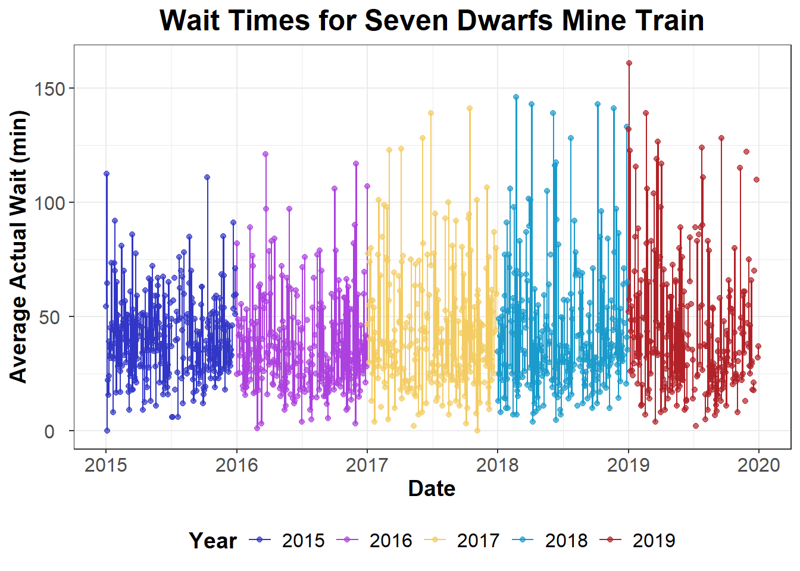
The graph above shows the average daily wait times for the Seven Dwarfs Mine Train, highlighting a clear seasonal pattern. Wait times tend to rise at the end and beginning of the year, likely reflecting the holiday season. In contrast, there is a noticeable dip about three‑quarters through the year, which may coincide with children returning to school in September. To better understand these seasonal effects, I compared the average actual wait times across different seasons.
Code
wait_times_full |># group bygroup_by( SEASON, ) |># average wait timesummarize(# average posted waitmean_actual_wait =mean(actual_wait, na.rm =TRUE), ) |># filterfilter( mean_actual_wait >32.1| mean_actual_wait <=25 ) |># plotggplot(aes(# x axis mean_actual_wait,# y axisfct_reorder(SEASON, mean_actual_wait),# colorfill = SEASON ) ) +# bar plotgeom_col() +# scale x axisscale_x_continuous(breaks =seq(0, 35, 5) ) +# scale fillscale_fill_manual(values =c("#BB2528", "#0F1647", "#ffcc33", "#E66C2C", "#1a9bcb") ) +# labelslabs(x ="Average Actual Wait (min)",y ="Season",title ="Disney Wait Times for Each Season",caption ="Top 3 and Bottom 2 Seasons" ) +# custom themedisney_theme() +# remove legendtheme(legend.position ="none" )
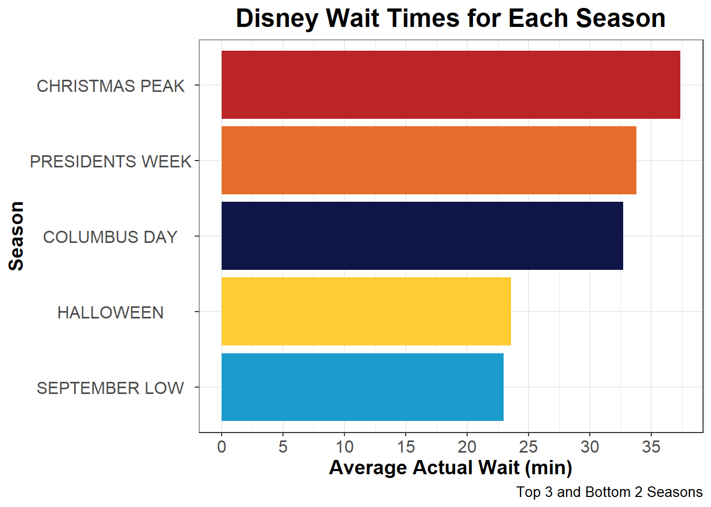
The seasons with the highest average waiting times are Christmas peak, Presidents Day, and Columbus Day. The Christmas peak includes the holidays at the end of December and New Year’s Day. Most people are off from work and school, so they have time to travel for an extended period. Also, there are special events at Walt Disney World during this time, such as the Candlelight Processional, that attract plenty of people. Presidents Day and Columbus Day are holiday weekends that give people enough time to The seasons with the lowest average wait times are Halloween and “September Low.” Halloween is unexpectedly quiet, likely because the park closes early for Mickey’s Not-So-Scary Halloween Party, which may discourage guests who prefer a full day in the park. September Low,sometimes called the “September Effect,” is the slowest period of the year, as there are no major holidays and most children are back in school. Families are also less inclined to plan a vacation after summer trips and back‑to‑school expenses. For visitors looking to experience shorter lines at Walt Disney World, September Low offers the best opportunity.
I also examined how the day of the week influences average actual wait times. Drawing from my background in sports analytics, I know that attendance patterns often vary depending on the day, with weekends typically attracting larger crowds. The same logic applies here: since more guests can visit on weekends than on weekdays, wait times are generally expected to be longer.
Code
## day of week without standard error barswait_times_full |># group bygroup_by( weekday ) |># average wait timesummarize(# average posted waitmean_actual_wait =mean(actual_wait, na.rm =TRUE),# sd of posted waitsd_actual_wait =sd(actual_wait, na.rm =TRUE),.groups ="drop" ) |># mutatemutate(# standard errorse = sd_actual_wait /sqrt(n()) ) |>ggplot(aes(# x axis mean_actual_wait,# y axisfct_rev(weekday),# colorfill = weekday ) ) +# bar plotgeom_col() +# line for averagegeom_vline(xintercept =27.82857,# dashed linelinetype ="dashed",# colorcolor ="black",# line widthlinewidth =1.5 ) +# scale colorsscale_fill_manual(values =c("#3136c6", "#ad41df", "#C4CED4", "#1a9bcb", "#B12228", "#F3CC64", "#12194A") ) +# scale x axisscale_x_continuous(breaks =seq(0, 70, 10) ) +# labelslabs(x ="Average Actual Wait (min)",y ="Day of Week",title ="Day of the Week is Not Significant" ) +# custom themedisney_theme() +# remove legendtheme(legend.position ="none" )
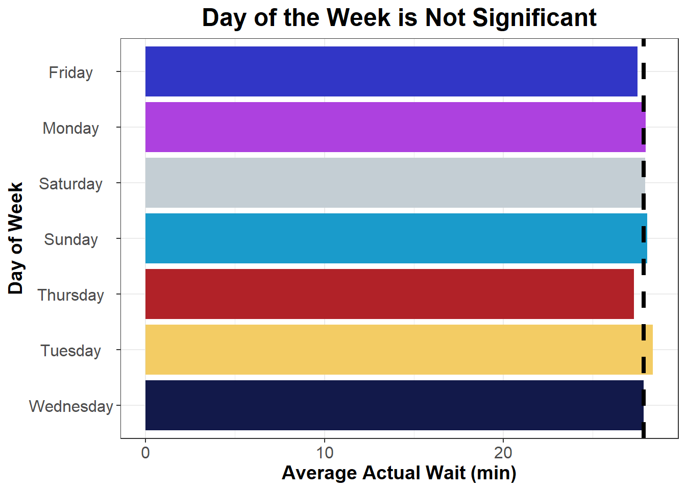
However, this theory does not hold true at Walt Disney World. Average actual wait times remain fairly consistent across all days of the week. Since most guests visit for multi‑day vacations rather than just a weekend, attendance tends to be evenly distributed throughout the week.
The next factor I examined was mean temperature. Extreme weather can influence guest behavior; on particularly hot days, visitors may be less willing to wait in line for over an hour, and the same is true during colder periods.
Code
## temperaturewait_times_full |># mutatemutate(# date without the time stampdate =date(datetime) ) |># group bygroup_by( date ) |># average wait timesummarize(# average posted waitmean_actual_wait =mean(actual_wait, na.rm =TRUE),# sd of posted waitsd_actual_wait =sd(actual_wait, na.rm =TRUE),# average temperaturemean_temp =mean(WDWMEANTEMP, na.rm =TRUE),.groups ="drop" ) |># mutatemutate(# standard errorse = sd_actual_wait /sqrt(n()) ) |># plotggplot(aes(# x axis mean_temp,# y axis mean_actual_wait ) ) +# pointsgeom_point(alpha =0.5,size =2,color ="#1a9bcb" ) +# LOES curvegeom_smooth(# formulaformula ="y ~ x",# methodmethod ="loess",# colorcolor ="goldenrod" ) +# labelslabs(x ="Mean Temperature (Fahrenheit)",y ="Average Actual Wait (min)",color ="Year",title ="Temperature Does Not Impact Wait Times" ) +# custom themedisney_theme()
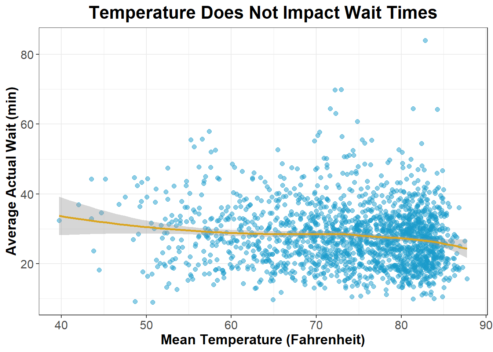
Temperature appears to have little effect on wait times overall. The graph features a LOESS curve, a nonparametric regression method that fits a smooth line through the data to highlight trends that a simple global model might miss. In this case, the LOESS curve shows that when temperatures rise above 85 degrees, average wait times actually decrease—likely because fewer people are willing to visit an amusement park in excessive heat, leading to shorter lines. However, the data set is limited, so firm conclusions cannot be drawn.
The final variable considered was the percentage of schools in session. The idea is that when more children are in school, fewer families visit Walt Disney World, resulting in shorter wait times. Conversely, when school is out, especially during major breaks like spring break, summer vacation, and holidays, attendance and wait times increase significantly.
Code
## % of schools in sessionwait_times_full |># mutatemutate(# date without the time stampdate =date(datetime),# insession as numericinSession =parse_number(inSession) ) |># group bygroup_by( date ) |># average wait timesummarize(# average posted waitmean_actual_wait =mean(actual_wait, na.rm =TRUE),# average temperaturemean_inSession =mean(inSession, na.rm =TRUE) ) |># mutatemutate(YEAR =factor(year(date)) ) |>ggplot(aes(# x axis mean_inSession,# y axis mean_actual_wait ) ) +# pointsgeom_point(alpha =0.5,size =2,color ="#1a9bcb" ) +# LOES curvegeom_smooth(# formulaformula ="y ~ x",# methodmethod ="loess",# colorcolor ="goldenrod" ) +# scale x axisscale_x_continuous(# convert x axis to a percent formatlabels = scales::percent_format(scale =1) ) +# labelslabs(x ="% of Schools in Session",y ="Average Actual Wait (min)",color ="Year",title ="More Schools in Session Leads to Short Wait Times" ) +# custom themedisney_theme()
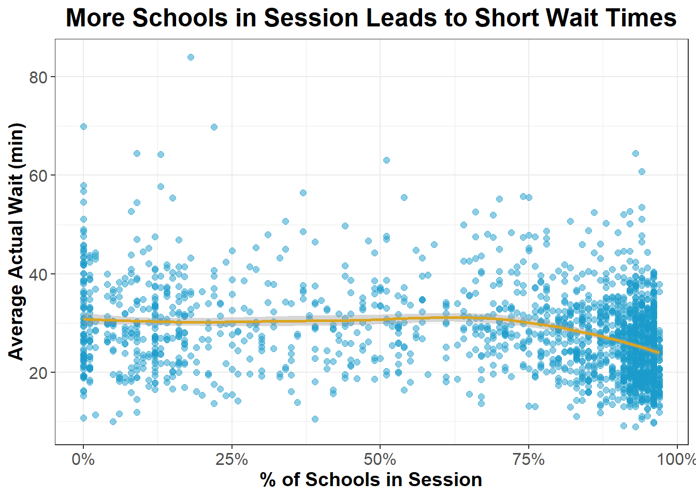
There is little noticeable effect on wait times until about 75% or more of schools are in session. When schools are in session, it generally coincides with the regular season schedule, indicating fewer families visit Walt Disney World. Conversely, when schools are out for holidays or breaks, attendance increases. As the percentage of schools in session rises beyond 75%, average actual wait times tend to decrease, reflecting lower crowd levels during typical school periods.
After analyzing these general trends, I turned to examine individual attraction wait times. To compare and contrast the differences between rides, I used hierarchical clustering, a flexible and interpretable unsupervised clustering method that groups observations based on their similarity. It computes the distance between observations. Unsupervised means there is no response variable. The objective is to understand the variation and grouping structure of a set of unlabeled data. In this context, the data points were the average actual wait times between 8 a.m. and 9 p.m. at Walt Disney World attractions. Using a dendrogram, I chose the number of clusters through subjective judgment to reveal meaningful groupings.
Code
## cutting dendrogramrides_hierachical_clustering |># dendrogramggdendrogram(labels =FALSE,leaf_labels =FALSE,theme_dendro =FALSE ) +# cut treegeom_hline(yintercept =5, linetype ="dashed", color ="firebrick" ) +# labelslabs(y ="Distance between Clusters",title ="'Cut' at y = 5 Gives 3 Clusters" ) +# custom themedisney_theme() +# remove x axis texttheme(axis.text.x =element_blank(),axis.title.x =element_blank() )
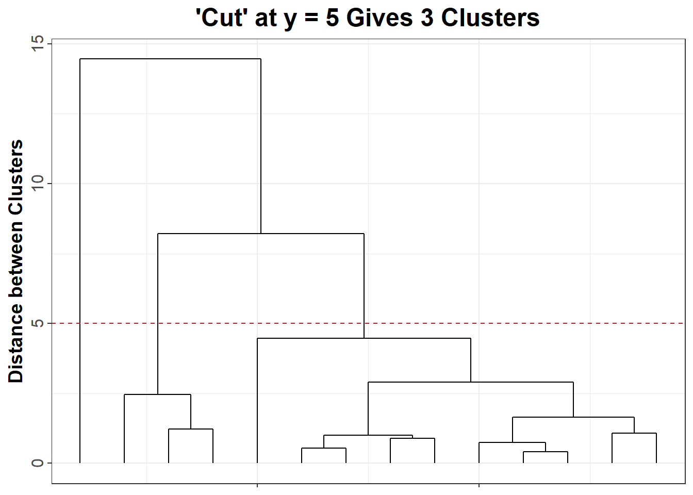
The number of black lines intersecting the red dashed line indicates the number of clusters. I “cut” the dendrogram at 5, the red dashed line, and three black lines intersect; therefore, there are three clusters. There is a significant difference in actual wait times between the clusters.
Code
## add cluster back to ride matrixride_matrix_hierachical_clusters <-tibble( ride_matrix,cluster =cutree( rides_hierachical_clustering,h =5 ))## ride names with clustersride_hierarchical_cluster <- ride_matrix_hierachical_clusters |># group by ride namegroup_by(ride_name) |># return cluster number for each ride namesummarize(cluster =first(cluster) )## join with mean posted wait timeride_daily_waits |>left_join(# data ride_hierarchical_cluster |>select(ride_name, cluster),# join byby ="ride_name" ) |># mutatemutate(# cluster as a factorcluster =factor(cluster) ) |># plotggplot(aes(# x axis mean_actual_wait,# y axisfct_rev(cluster),# colorfill = cluster ) ) +# boxplotgeom_boxplot() +# scale colorscale_fill_manual(values =c("#3136c6", "#ad41df", "#1a9bcb") ) +# labelslabs(x ="Average Wait Time (min)",y ="Cluster",color ="Cluster",title ="Clustered Ride Wait Times" ) +# custome themedisney_theme() +# remove legendtheme(legend.position ="none" )
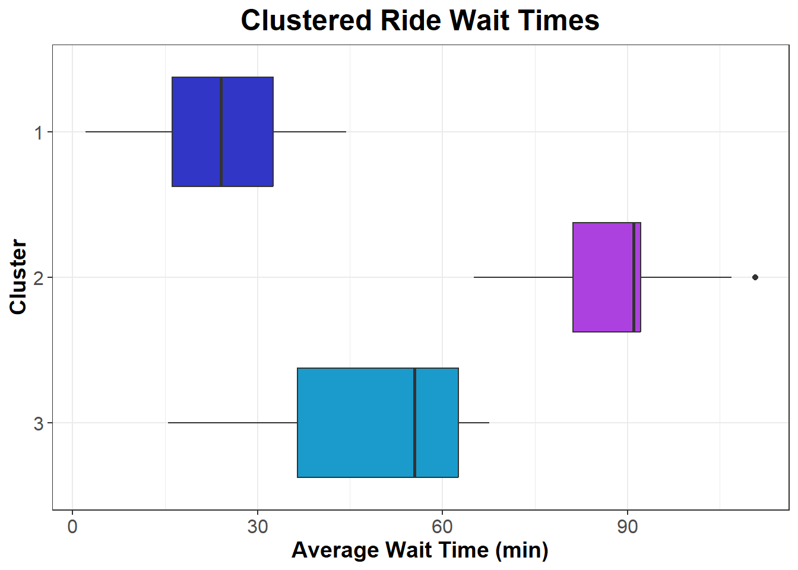
The boxplot shows the distribution of average wait time for each cluster. The first cluster has the lowest average wait time of 24 minutes. 10 rides fall under the first cluster: Alien Swirling Saucers, DINOSAUR, Expedition Everest - Legend of the Forbidden Mountain, Kilimanjaro Safaris, Pirates of the Caribbean, Rock ‘n’ Roller Coaster Starring Aerosmith, Soarin’ Around the World, Spaceship Earth, Splash Mountain, and Toy Story Mania!. Most of these attractions maintain consistent wait times throughout the day and are either less popular or efficient in handling high guest capacity. For example, Spaceship Earth, the flagship attraction at EPCOT, exemplifies the consistently low wait times typical of this cluster.
Code
## join with mean posted wait timeride_daily_waits |>left_join(# data ride_hierarchical_cluster |>select(ride_name, cluster),# join byby ="ride_name" ) |># mutatemutate(# cluster as a factorcluster =factor(cluster) ) |># filterfilter( ride_name =="Spaceship Earth" ) |># plotggplot(aes(# x axis hour_of_day,# y axis mean_actual_wait,# colorcolor = cluster ) ) +# line plotgeom_line(# line widthlinewidth =1.15 ) +# pointsgeom_point() +# scale colorscale_color_manual(values =c("#3136c6", "#ad41df", "#C4CED4", "black") ) +# scale x axisscale_x_continuous(breaks =seq(8, 21, 1),labels =c(8:12,1:9 ) ) +# labelslabs(x ="Hour of Day",y ="Average Wait Time (min)",color ="Cluster",title ="Spaceship Earth" ) +# custome themedisney_theme() +# remove legendtheme(legend.position ="none" )
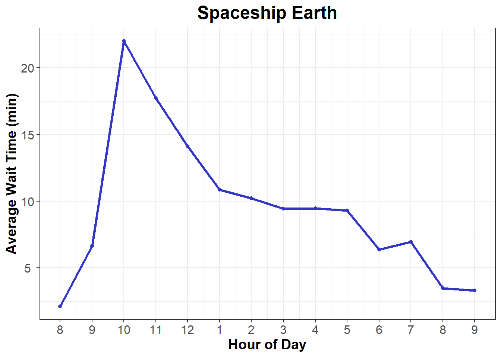
The second cluster consists of just one ride: Avatar Flight of Passage. No other attraction at Walt Disney World comes close to its long wait times, placing it in a tier of its own. The average actual wait time is 88 minutes, with a peak wait time of 110 minutes occurring at 1 PM.
Code
## join with mean posted wait timeride_daily_waits |>left_join(# data ride_hierarchical_cluster |>select(ride_name, cluster),# join byby ="ride_name" ) |># mutatemutate(# cluster as a factorcluster =factor(cluster) ) |># filterfilter( ride_name =="Avatar Flight of Passage" ) |># plotggplot(aes(# x axis hour_of_day,# y axis mean_actual_wait,# colorcolor = cluster ) ) +# line plotgeom_line(# line widthlinewidth =1.15 ) +# pointsgeom_point() +# scale colorscale_color_manual(values =c("#ad41df", "#C4CED4", "black") ) +# scale x axisscale_x_continuous(breaks =seq(8, 21, 1),labels =c(8:12,1:9 ) ) +# labelslabs(x ="Hour of Day",y ="Average Wait Time (min)",color ="Cluster",title ="Avatar Flight of Passage" ) +# custome themedisney_theme() +# remove legendtheme(legend.position ="none" )
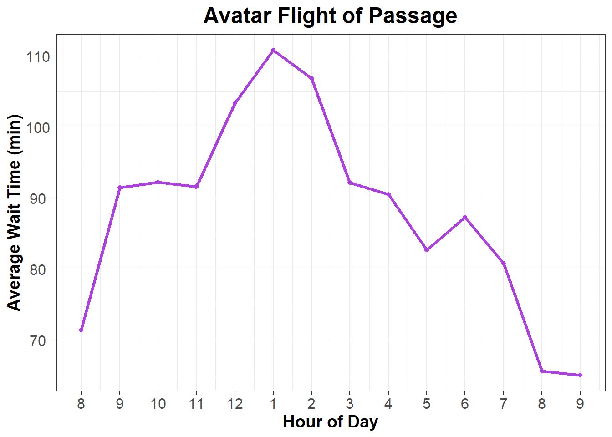
The third cluster includes three rides: Na’vi River Journey, Seven Dwarfs Mine Train, and Slinky Dog Dash, with an average wait time of nearly 49.5 minutes. This cluster exhibits the highest variation among all clusters. It appears that guests do not prioritize these attractions first thing in the morning, as indicated by the lower wait times during early hours followed by a lunchtime spike.
Code
## join with mean posted wait timeride_daily_waits |>left_join(# data ride_hierarchical_cluster |>select(ride_name, cluster),# join byby ="ride_name" ) |># mutatemutate(# cluster as a factorcluster =factor(cluster) ) |># filterfilter( ride_name =="Seven Dwarfs Mine Train" ) |># plotggplot(aes(# x axis hour_of_day,# y axis mean_actual_wait,# colorcolor = cluster ) ) +# line plotgeom_line(# line widthlinewidth =1.15 ) +# pointsgeom_point() +# scale colorscale_color_manual(values =c("#1a9bcb", "#C4CED4", "black") ) +# scale x axisscale_x_continuous(breaks =seq(8, 21, 1),labels =c(8:12,1:9 ) ) +# labelslabs(x ="Hour of Day",y ="Average Wait Time (min)",color ="Cluster",title ="Seven Dwarfs Mine Train" ) +# custome themedisney_theme() +# remove legendtheme(legend.position ="none" )
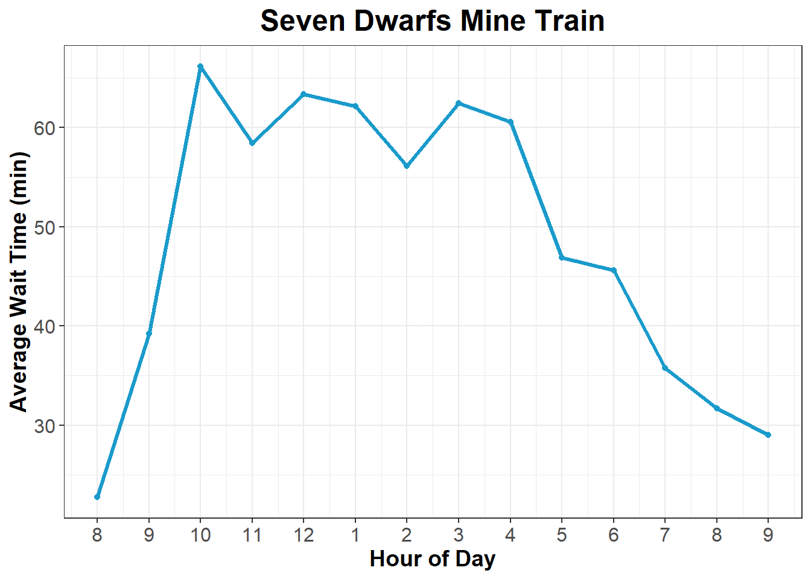
After clustering the rides, I sought to measure each ride’s efficiency. I defined ride efficiency as the average actual wait time divided by the ride duration. A higher value indicates lower efficiency, meaning guests spend a long time waiting relative to the length of the ride itself. Less efficient rides have long wait times but short ride durations.
Code
## calculate ride efficiencyride_efficiency <- wait_times_full |>mutate(# efficiencyefficiency = actual_wait / ride_duration ) |># group by group_by(ride_name) |># summarizesummarize(# average ride efficiencymean_efficiency =mean(efficiency, na.rm =TRUE),# average posted waitmean_actual_wait =mean(actual_wait, na.rm =TRUE),# durationride_duration =first(ride_duration) ) |># arrange by mean efficiencyarrange(-mean_efficiency)## plot ride efficiency with clustersride_efficiency |># left join with clustersleft_join( ride_hierarchical_cluster,# join byby ="ride_name" ) |># have cluster as a factormutate(cluster =factor(cluster),# shorten some ride namesride_name =recode(# column ride_name,# shorten Rock 'n' Roller Coaster"Rock 'n' Roller Coaster Starring Aerosmith"="Rock 'n' Roller Coaster",# short Everest"Expedition Everest - Legend of the Forbidden Mountain"="Expedition Everest" ) ) |># plotggplot(aes(# x axis mean_efficiency,# y axisreorder(ride_name, mean_efficiency),# colorfill = cluster ) ) +# geom columngeom_col(# colorcolor ="black" ) +# scale colorscale_fill_manual(values =c("#3136c6", "#ad41df", "#1a9bcb") ) +# labelslabs(x ="Average Wait Time / Ride Duration (Efficiency)",y ="",fill ="Cluster",title ="Ride Efficiency Rankings" ) +# custom themedisney_theme()
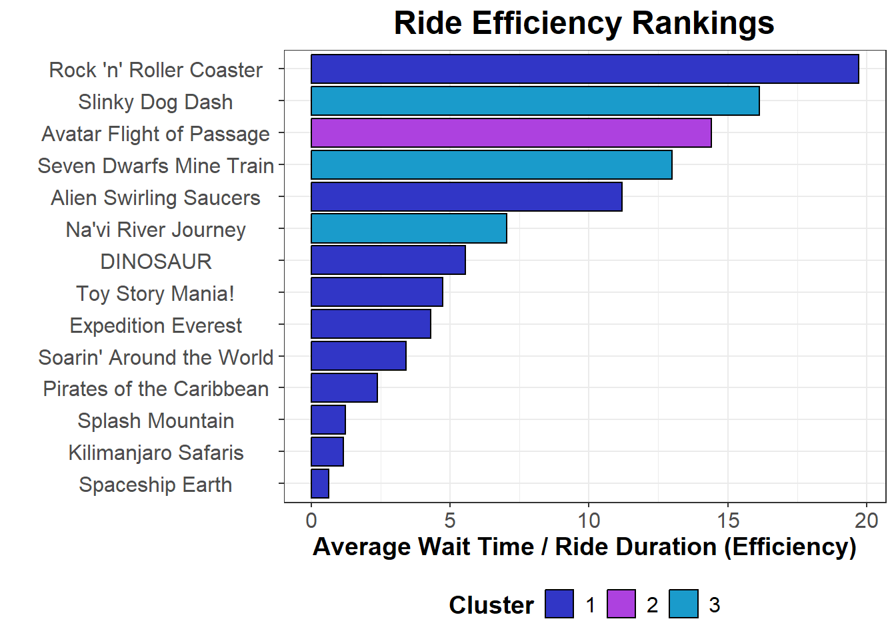
Most rides in cluster 1 are considered efficient, likely due to their lower wait times and higher throughput. However, two exceptions are Rock ‘n’ Roller Coaster Starring Aerosmith and Alien Swirling Saucers. Rock ‘n’ Roller Coaster is inefficient because it has an average wait time of 30 minutes for a ride lasting only about a minute and a half. Alien Swirling Saucers has a similar wait time but a ride duration approximately one minute longer. Although Avatar Flight of Passage has an extremely high wait time of about 88 minutes, its six-minute ride duration partially offsets this, improving its efficiency somewhat. The two roller coasters in the third cluster are also considered inefficient due to their long wait times paired with short, roughly three-minute rides. In contrast, Na’vi River Journey, despite similar wait times, has a longer ride duration of five minutes, making it more efficient by comparison.
6 Discussion
When planning a trip to Walt Disney World, it’s important to consider crowd levels. The most critical factor is the season of your visit. Extended holiday weekends and the Christmas season are among the busiest times of the year. In contrast, the low crowd period in September offers an ideal opportunity to avoid long lines. Once at the park, optimizing your time is essential—try to visit popular rides either early in the morning or late in the day when lines tend to be shorter. Using tools like TouringPlans.com’s Lines app can also help by providing more accurate real-time wait times. Keep in mind this analysis is based on data from the five years before the COVID-19 pandemic, and Walt Disney World has undergone many changes since then, so some advice in this paper may not be as relevant.
7 References
Brown, S. (2012, November 14). Len Testa and the Math Behind Your Theme Park Vacation. WIRED. https://www.wired.com/2012/11/len-testa-math-vacation/
Destiny Ferman (2024). An Exploratory Analysis of Walt Disney World Ride Wait Times. California State Polytechnic University, Pomona https://scholarworks.calstate.edu/downloads/td96kc050